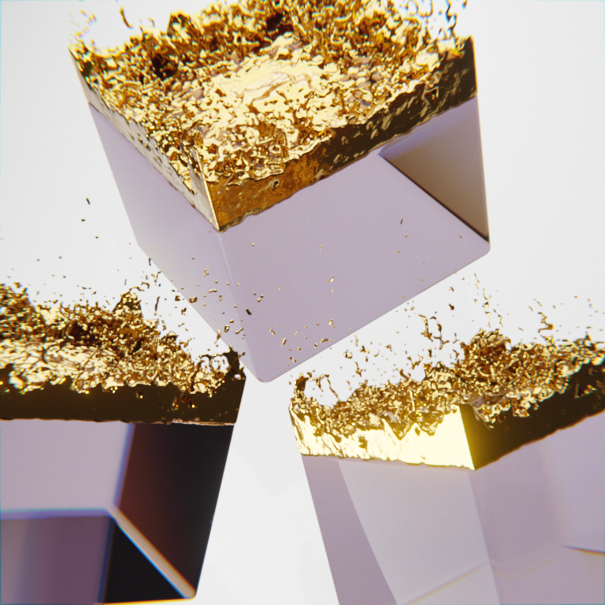
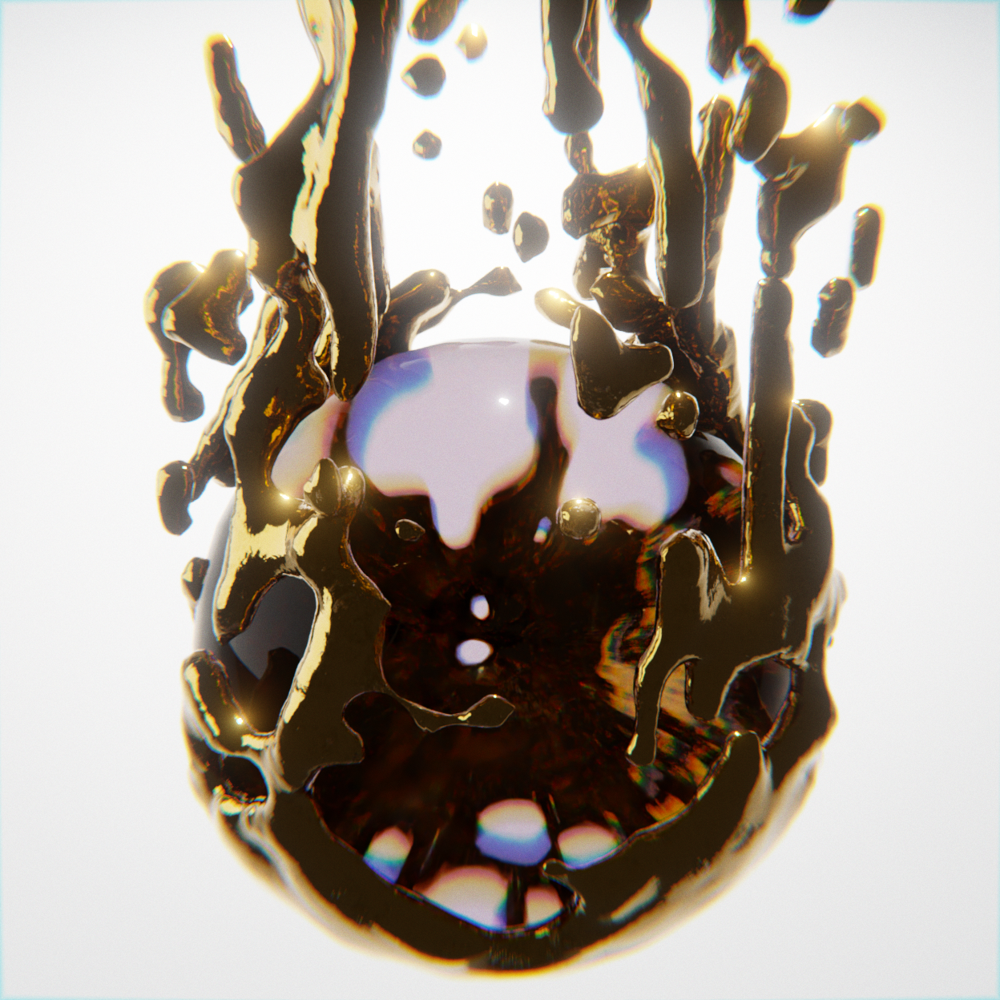
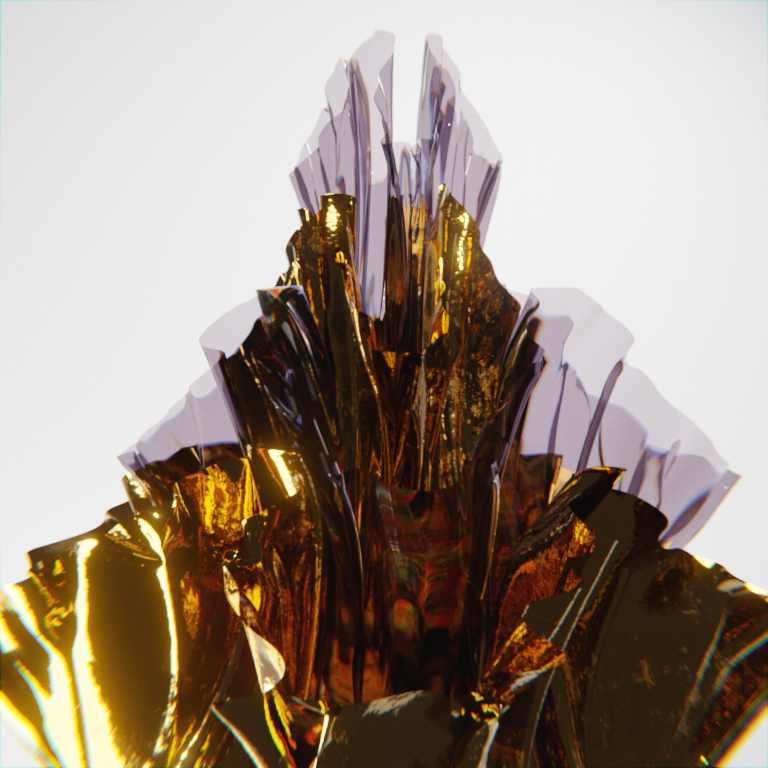
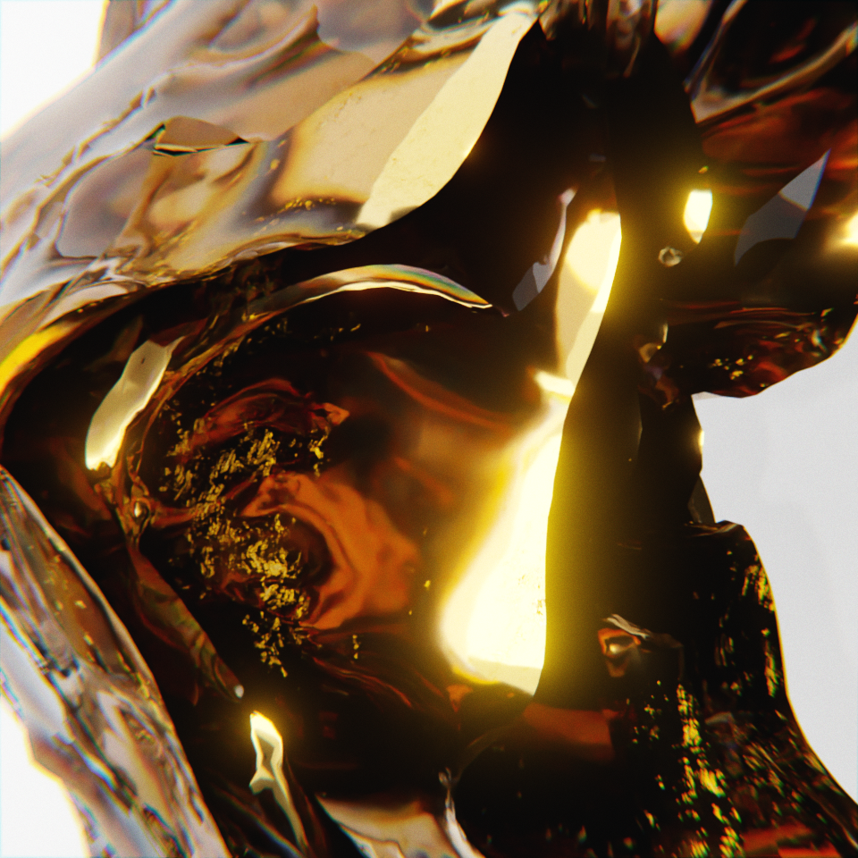
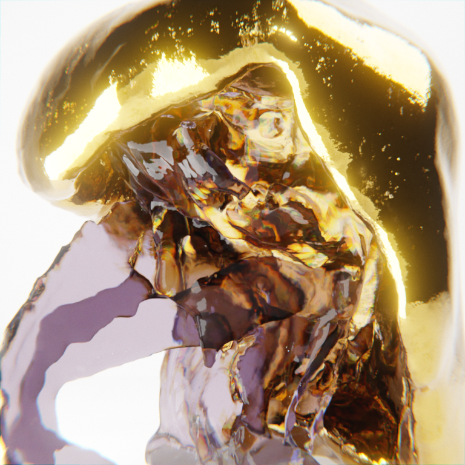
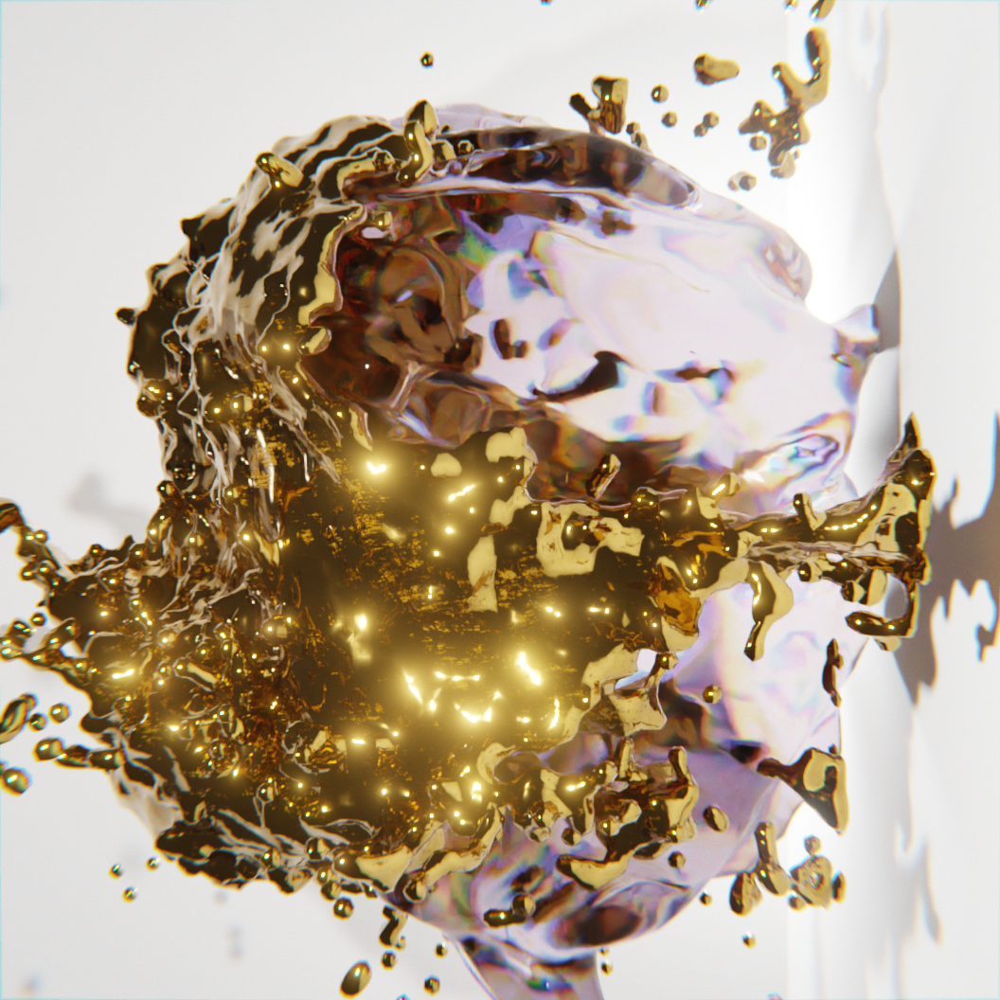

OR ET VERRE



De par sa symbolique et son esthétique très fortes, l’or est un élément (dans tous les sens du terme, le
métallurgique en tête)
majeur nourrissant l’éternel débat entre beauté et idée dans l’art. S’il faut donner dans la philosophie
– ne serait-ce qu’un
minimum –, il convient de citer Platon et son « essence du beau résidant dans l’intelligible » contre
Kant pour qui « est beau
ce qui plaît universellement sans concept ». Ce courant double, symbolique et esthétique, trouve sa
source dans les propriétés
exceptionnelles du matériau. C’est donc sous cet angle que cette chronique a choisi de l’aborder, en
s’efforçant de mettre en
lumière des relations entre les propriétés et ce qu’elles évoquent. Cette mise en relation a conduit à
une structure du propos
selon trois thèmes : temps, espace et beauté. Les deux premiers sont dans le camp de Platon, le
troisième dans celui de Kant
mais tous concourent aux différentes symboliques de l’or.
D'autre part, le verre comme matériaux n’a jamais été très mis en valeur par les artistes, les galeries
d’exposition, les musées
et le public n’a jamais manifesté une fascination particulière pour les œuvres d’art contemporaines
faites en verre et cela à cause
des luttes incessantes entre les artisans verriers et les artistes . Faut il considérer une œuvre
artistique en verre comme la
réalisation d’une technique particulière ou bien un élément matériel secondaire ou complémentaire auquel
on vient ajouté une fonction
esthétique et un message? Le vitrail est une bonne illustration de ce que le public s’attend
subjectivement à voir, un matériaux qui
vient servir et compléter un ensemble d’autres techniques. Alors on peut se demander quelle est la place
du verre matériau dans l’art contemporain ?
L’âge d’or du verre dans l’art contemporain à eu lieu dans les années 80, avec de nombreux verriers
talentueux qui se regroupent,
influencés par les courants rétro et l’art déco. Ils s’intéressent aux créations des grands verriers des
années 60 comme Gallé,
Marinot ou Argy-Rousseau. Trois groupes se distinguent : ceux qui continuent a souffler le verre de
façon artisanale, ceux qui travaillent
à assembler diverses pièces de verre, à les déformer, les rayer… et ceux qui dessinent leurs formes et
les font fabriquer par leurs experts
dans des ateliers. Maintenant nous pouvons parler d'une nouvelle catégorie, parlons de ceux qui prefere
le creer virtuellement en 3D...
Dans cette capsule, le but est d'une part de jouer avec les deux differents matériaux, mais egalement de
jouer avec des formes plus ou moins aléatoires,
la refraction du verre mais la distorsion qu'il peut produire. Ainsi, à l'aide de differentes
simulations physique, j'ai reussi à obtenir differentes photos
mais également une video.



» RETOUR HAUT DE PAGE
» VERS LES CAPSULES